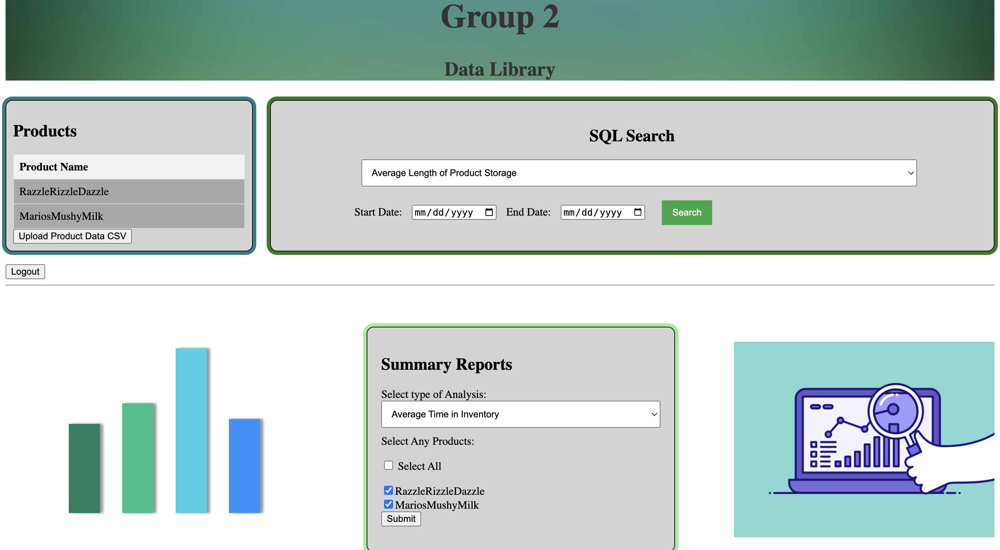

This project was my first introduction to website development (this portfolio is my second). It was for the most challenging class in my major, although it didn't feel that difficult to me. Our objective was to create a website that has data already uploaded to it and can perform queries on it for data analysis. However, there was an opportunity for bonus points for anything extra, and I took advantage of that fact. In the end, our team created this website (they might delete it later): Here
Here are a couple of screenshots of the website:
I took most of the part when the home, about, login, and register pages. The home and about pages showed info and were primarily HTML/CSS. The styling wasn't amazing, but it had cool gifs in the background.
I also wrote a lot of the JavaScript aspects on the login/register pages. I added a validator to make sure you would log in correctly. In PHP, I made sure that when registering, there is no duplicate email already in the database, and when logging in, you need to enter the right password. Also, if you were already logged in and reloaded the page, you would be redirected to the product page.
Within the main page, I made sure that only data associated with your account would show up. I also created the feature of being able to upload a CSV into the MySQL database with a JavaScript validator to ensure the data is good. Other than that, I assisted in the general structure of the database and a couple of the SQL search queries.
I ended up taking more of a leadership position in this project where my teammates would ask me for tasks/to check their work, and I would quality-check over everyone's code to make sure it looked good.
Socials